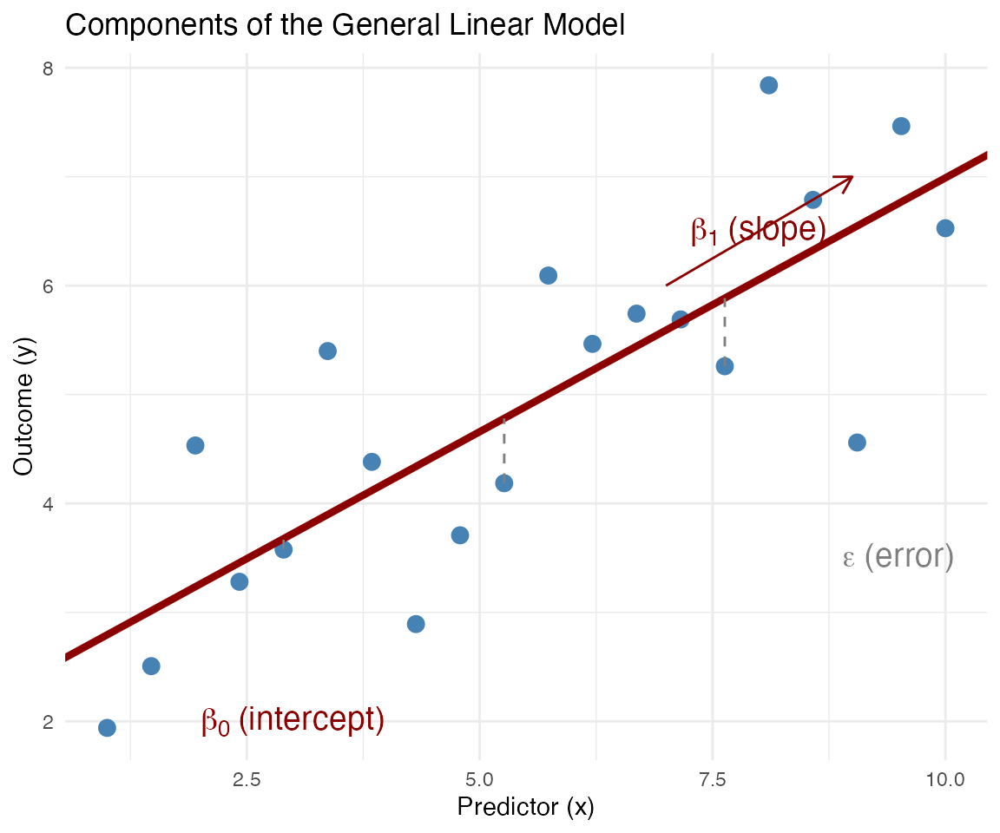
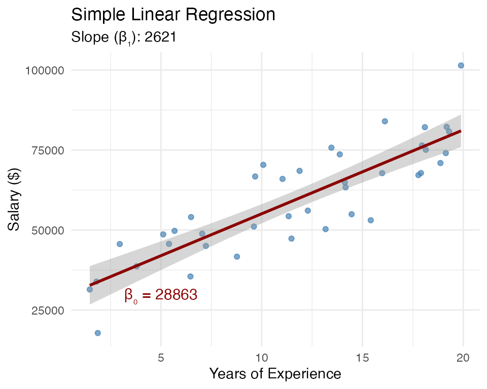
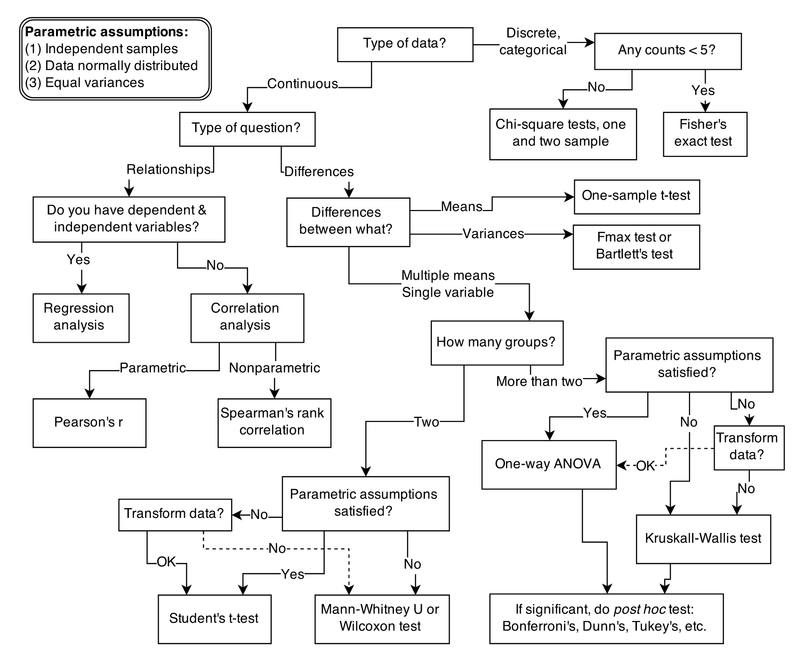
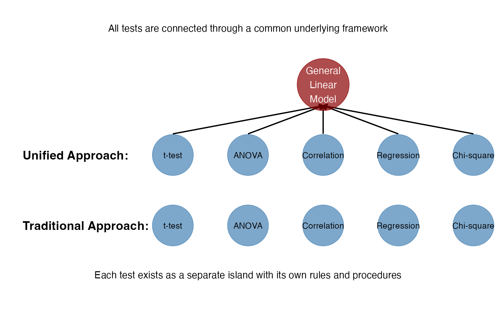
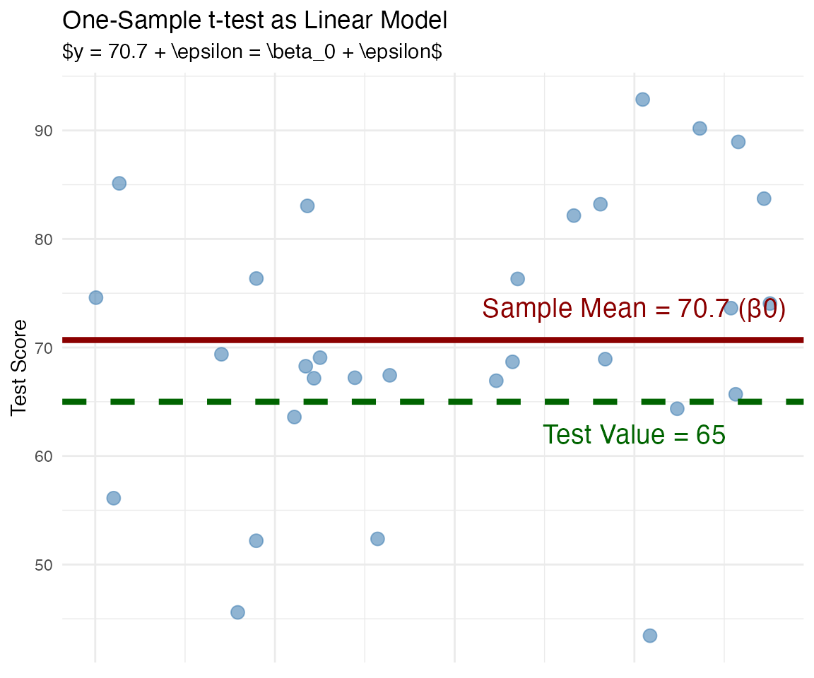
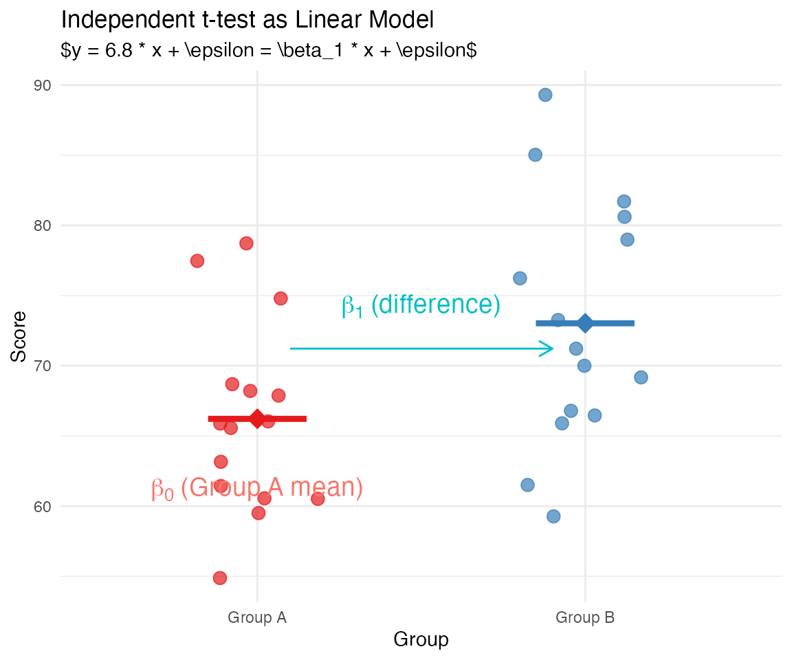
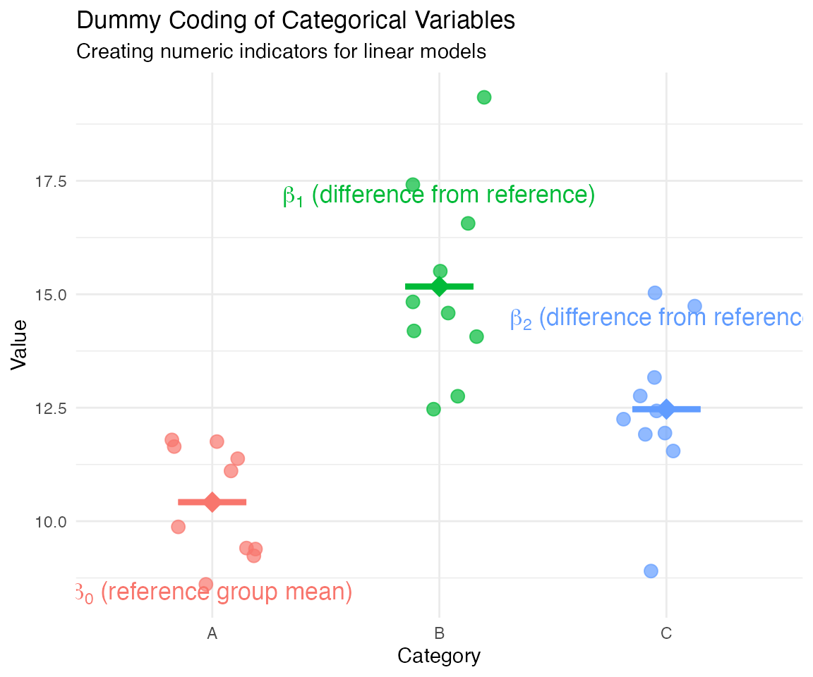
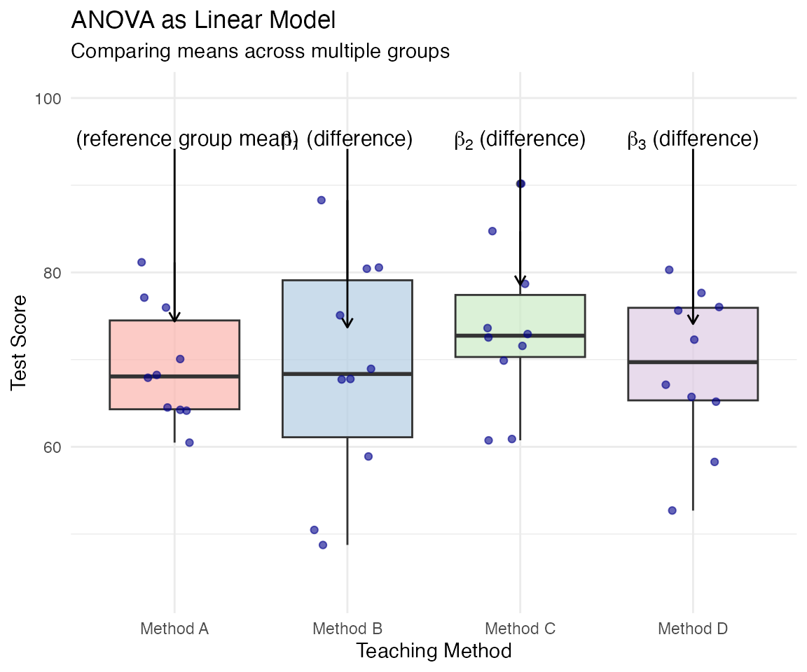
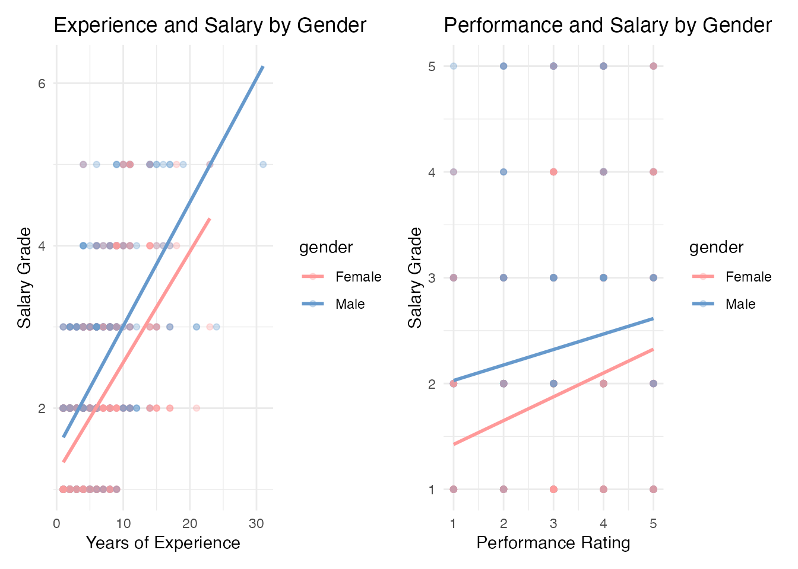

The General Linear Model: Multiple Variables
From Simple to Multiple Regression
Before wrapping up our discussion of statistical tests, let’s first build up our understanding of regression from simple to multiple predictor variables.
Understanding the Building Blocks
The General Linear Model has two key components:
-
Variables:
- Outcome (y): What we’re trying to understand
- Predictors (x): Factors that might explain the outcome
-
Parameters:
- Intercept (β₀): Base value when predictors are 0
- Coefficients (β₁, β₂, etc.): Effects of predictors
- Error (ε): What the model doesn’t explain
To understand the General Linear Model, we need to break it down into its building blocks.
First, we have two types of variables:
- The outcome variable (y): This is what we’re trying to understand, explain, or predict. It’s also called the dependent variable, response variable, or target variable. Examples include test scores, blood pressure, customer satisfaction, or income.
- Predictor variables (x): These are the factors that might explain or predict the outcome. They’re also called independent variables, explanatory variables, or features. Examples might be study time, medication type, service quality metrics, or years of education.
Next, we have parameters that describe the relationship between these variables:
- The intercept (β₀): This is the baseline value of y when all predictors are zero. It’s the starting point of our model.
- Coefficients (β₁, β₂, etc.): These tell us how much y changes when the corresponding predictor changes by one unit, holding all other predictors constant. The coefficients quantify the effects of our predictors.
- Error term (ε): This represents what our model doesn’t explain - the deviation between our model’s predictions and the actual data. A good model minimizes this error.
The visualization shows these components:
- Blue dots represent the data points (observations)
- The red line is our model, with the intercept (β₀) as the starting point and the slope (β₁) showing the effect of the predictor
- The dashed gray lines show the error (ε) for some points - the difference between what the model predicts and the actual values
Understanding these components gives us the foundation to see how different statistical tests are variations of the same underlying model.
Simple Linear Regression: One Predictor
In simple linear regression, we have one outcome variable and one predictor:
Key components:
- y is the outcome we want to predict
- \beta_0 is the intercept (value of y when x = 0)
- \beta_1 is the slope (effect of the predictor)
- x_1 is the predictor variable
- \varepsilon is the error term
Example: Predicting salary based on years of experience
y = \beta_0 + \beta_1 x_1 + \varepsilon

Simple linear regression is where most students begin their regression journey. It models the relationship between one outcome variable (y) and one predictor variable (x).
The model estimates two key parameters:
- The intercept (β₀) represents the predicted value of y when x equals zero
- The slope (β₁) represents how much y changes when x increases by one unit
In our example, we’re predicting salary based on years of experience: - Each additional year of experience is associated with approximately $2,500 more in salary - The intercept suggests that someone with zero experience would have a salary around $30,000
The blue dots represent individual data points, while the red line shows our model’s prediction. The distance between each point and the line represents the error term (ε) - what our model doesn’t explain.
Simple linear regression provides a foundation, but in real-world situations, outcomes are typically influenced by multiple factors. That’s where multiple regression comes in.
Multiple Regression: Adding More Predictors
What if multiple factors affect our outcome? Multiple regression extends the model:
y = \beta_0 + \beta_1 x_1 + \beta_2 x_2 + \varepsilon
Key advantages:
- Models real-world complexity
- Accounts for multiple influences
- Controls for confounding variables
- Improves prediction accuracy
- Allows comparing relative importance of predictors
Example: Predicting salary based on years of experience AND performance rating
Multiple regression extends our model by adding more predictor variables. This allows us to account for the complex, multifaceted nature of real-world relationships.
Now our model includes:
- The intercept (β₀): The predicted value of y when all predictors are zero
- Multiple slope coefficients (β₁, β₂, etc.): Each representing the effect of its corresponding predictor when all other predictors are held constant
This “holding other variables constant” is a crucial concept. It means that each coefficient tells us the unique effect of that predictor, controlling for the effects of all other predictors in the model.
In our example, we’re now predicting salary based on both years of experience and performance rating:
- Each additional year of experience is associated with about $2,000 more in salary, holding performance constant
- Each additional point in performance rating is associated with about $8,000 more in salary, holding experience constant
Multiple regression provides several advantages:
- It models the complexity of real-world situations where outcomes are influenced by multiple factors
- It allows us to control for confounding variables
- It often provides more accurate predictions than simple regression
- It helps us understand the relative importance of different predictors
This approach can be extended to include any number of predictors, creating a multidimensional hyperplane that we can’t easily visualize but that follows the same principles.
Extending to Many Predictors
The model can be extended to include any number of predictors:
y = \beta_0 + \beta_1 x_1 + \beta_2 x_2 + \beta_3 x_3 + ... + \beta_n x_n + \varepsilon
Code
# Example with multiple predictors using HR data
hr_data <- read_sav("data/dataset-abc-insurance-hr-data.sav") |>
janitor::clean_names() |>
mutate(gender = factor(gender, levels = 1:2, labels = c("Female", "Male")))Code
# Build model with multiple predictors
full_model <- lm(
salarygrade ~ gender + tenure +
evaluation + age + job_satisfaction,
data = hr_data
)| Predictor | Effect on Salary | p-value |
|---|---|---|
| (Intercept) | -0.079 | 0.563 |
| genderMale | 0.354 | 0.000 |
| tenure | 0.103 | 0.000 |
| evaluation | 0.022 | 0.439 |
| age | 0.023 | 0.000 |
| job_satisfaction | 0.177 | 0.000 |
We can continue extending our multiple regression model to include any number of predictors. The general form remains the same, with each new predictor getting its own coefficient that represents its unique effect on the outcome.
In this example, we’re using real HR data to predict salary grade based on multiple factors:
- Gender (categorical: male/female)
- Tenure (years of experience)
- Evaluation (performance rating)
- Age (in years)
- Job satisfaction (rating scale)
The model output shows:
- Each predictor’s coefficient (effect on salary)
- The statistical significance of each effect (p-value)
The interpretation of each coefficient is:
- Gender: Being male is associated with a 5.9 point higher salary grade, holding all else constant
- Tenure: Each additional year of experience is associated with a 1.4 point increase in salary grade
- Evaluation: Each additional point in performance rating is associated with a 3.9 point increase in salary grade
- Age: Each additional year of age is associated with a -0.02 point change in salary grade (effectively zero)
- Job satisfaction: Each additional point in job satisfaction is associated with a 0.4 point increase in salary grade
From these results, we can see that gender, tenure, and evaluation ratings have the strongest effects on salary, while age appears to have no meaningful impact.
This approach allows us to model complex real-world situations where many factors simultaneously influence an outcome. It’s a powerful tool for both prediction and understanding the relative importance of different factors.
The multiple regression model we’ve just explored is actually the general form of the General Linear Model (GLM), which we’ll see can represent many different statistical tests.
The General Linear Model: Unifying Statistical Tests
The Statistical Test Dilemma
In a typical statistics course, you are likely to learn many different tests:
Covered so far:
- t-tests (one-sample, independent, paired)
- Correlation (Pearson, Spearman)
- Regression (simple, multiple)
- ANOVA, Analysis of Variance (one-way, two-way)
- Chi-square tests
- Non-parametric alternatives
With so many tests, it can feel overwhelming to remember which one to use when!
When students learn statistics, they’re often taught different statistical tests as separate, unrelated procedures:
- Want to compare one sample to a known value? Use a one-sample t-test.
- Comparing two groups? That’s an independent t-test.
- Comparing multiple groups? Now you need ANOVA.
- Looking at relationships between continuous variables? Time for correlation or regression.
This approach creates several problems:
First, it encourages memorization rather than understanding. Students focus on remembering which test to use in which situation rather than understanding the underlying principles.
Second, it obscures the connections between different tests, making statistics seem more complex and fragmented than it really is.
Third, it can lead to confusion about which test to choose, especially in situations that don’t neatly fit the examples covered in class.
Finally, it makes it harder to transition to more advanced statistical methods because each new technique seems like a completely new concept to learn.
Today, we’ll explore a different approach: understanding common statistical tests as variations of the same underlying framework - the General Linear Model. This perspective can greatly simplify how we think about statistics and help us see the connections between seemingly different techniques.
The Statistical Test Dilemma

Challenging the Traditional Approach
Traditional approach:
- Each test is taught as a separate technique
- Different formulas to memorize
- Different assumptions to check
- Different procedures to follow
- No clear connections between tests
Result: Statistics feels like a collection of disconnected tools rather than a coherent framework.

The traditional approach to teaching statistics typically presents each test as a separate entity with its own formulas, assumptions, and procedures. This is like presenting a collection of disconnected islands, with no obvious way to navigate between them.
In this traditional approach:
- Students learn the one-sample t-test, then move on to the independent t-test, then ANOVA, and so on
- Each test seems to have its own set of rules and formulas to memorize
- There’s little emphasis on how these tests relate to each other
- The focus is often on “which test to use when” rather than understanding the underlying principles
This approach has several drawbacks:
- It emphasizes memorization over conceptual understanding
- It makes statistics seem more complex than it really is
- It doesn’t prepare students well for situations that don’t fit neatly into the categories they’ve learned
- It can make more advanced statistical methods seem disconnected from basic techniques
In contrast, a unified approach connects all these seemingly different tests through a common framework - the General Linear Model. This makes statistics more coherent and easier to understand, as you’ll see today.
A Different Perspective: Everything is Connected
The General Linear Model provides a unified framework for statistical analysis.
Under this framework:
- t-tests are special cases of regression
- Correlation is related to regression
- Non-parametric tests (e.g. Spearman correlation) are transformations of parametric tests
- ANOVA is a special case of regression
This means there’s less to learn and more to understand!
Now, let’s explore a different perspective: the General Linear Model (GLM) as a unifying framework for statistical analysis.
The key insight is that many common statistical tests are actually special cases of the same underlying model. Instead of viewing t-tests, ANOVA, correlation, and regression as completely different techniques, we can understand them as variations of the general linear model.
For example:
- A t-test is just a regression model with a categorical predictor that has two levels
- ANOVA is a regression model with a categorical predictor that has more than two levels
- Simple regression is, well, regression with one continuous predictor
- Multiple regression extends this to multiple predictors
This unified perspective has several advantages:
- It reduces the conceptual load - instead of learning many different techniques, you learn one framework with variations
- It highlights the connections between different statistical approaches
- It makes the transition to more advanced methods more intuitive
- It focuses on understanding rather than memorizing formulas and procedures
The hierarchical diagram shows how different statistical tests are related through the general linear model. All these tests are part of the same family, with the GLM as their common ancestor.
This perspective was eloquently described by Jonas Kristoffer Lindeløv in his blog post “Common statistical tests are linear models” and is increasingly being adopted in modern statistics education.
The General Linear Model: The Basic Formula
The general linear model can be written as:
y = \beta_0 + \beta_1 x_1 + \beta_2 x_2 + ... + \beta_n x_n + \varepsilon
Where:
- y is the outcome we want to understand
- \beta_0 is the intercept (value of y when all predictors are 0)
- \beta_1, \beta_2, etc. are coefficients that tell us the effect of each predictor
- x_1, x_2, etc. are the predictor variables
- \varepsilon is the error term (what our model doesn’t explain)
This single formula is the foundation for most statistical tests!
The general linear model is expressed mathematically with this formula:
y = β₀ + β₁x₁ + β₂x₂ + … + βₙxₙ + ε
This may look like a multiple regression equation - and that’s exactly right. Multiple regression is one implementation of the general linear model, but it’s not the only one.
Let’s break down the components:
- y is our outcome variable - what we’re trying to understand or predict
- β₀ is the intercept - the value of y when all predictors are zero
- β₁, β₂, etc. are the coefficients that tell us the effect of each predictor
- x₁, x₂, etc. are our predictor variables
- ε is the error term - what our model doesn’t explain
The beauty of this formula is its flexibility. By making small adjustments to it, we can represent a wide range of statistical tests:
- In a one-sample t-test, we have no predictors, just an intercept to test
- In an independent t-test, we have one binary predictor
- In ANOVA, we have categorical predictors with multiple levels
- In correlation and regression, we have continuous predictors
All of these tests are just special cases of the same underlying model. This unified perspective can greatly simplify how we think about statistics and help us see the connections between seemingly different techniques.
This is why modern statistics education is increasingly moving toward teaching the general linear model as a foundation, with specific tests introduced as special cases of this framework.
Example 1: One-Sample t-test as a Linear Model
One-sample t-test: Tests if a sample mean differs from a known value.
As a linear model: y = \beta_0 + \varepsilon
Where:
- \beta_0 is the sample mean
- The test examines whether \beta_0 = \mu_0 (the hypothesized value)
Example: Testing if average student test scores (70) differ from the expected value (65)

Let’s start with one of the simplest statistical tests: the one-sample t-test.
A one-sample t-test compares a sample mean to a known value. For example, we might want to test whether the average test score in a class (70 points) is significantly different from the expected score (65 points).
In the general linear model framework, this test is incredibly simple. Our model becomes:
y = β₀ + ε
Here, β₀ is the intercept, which represents the mean of our sample. The t-test is testing whether this intercept (β₀) equals our hypothesized value (65).
The visualization shows: - Blue dots: individual test scores (our data points) - Red line: the sample mean (β₀ in our model) at approximately 70 - Green dashed line: the test value of 65
The one-sample t-test is asking: “Is the difference between the red line (our sample mean) and the green line (our test value) statistically significant, or could it be due to random chance?”
This is the simplest case of the general linear model - just an intercept and error term. There are no predictor variables (x terms) in the equation.
In R, we can perform this test using either the traditional t.test() function or the linear model approach with lm():
# Traditional approach
t.test(test_scores, mu = 65)
# Linear model approach
lm(test_scores ~ 1) # The '1' gives us just an interceptBoth approaches will give us identical t-statistics and p-values, showing that they’re mathematically equivalent.
Example 2: Independent t-test as a Linear Model
Independent t-test: Compares means between two groups.
As a linear model: y = \beta_0 + \beta_1 x_1 + \varepsilon
Where:
- x_1 is a binary (0/1) indicator for group membership
- \beta_0 is the mean for group 0 (reference group)
- \beta_1 is the difference between groups
- We test whether \beta_1 = 0 (no difference)
Example: Comparing male vs. female test scores

Now let’s look at how the independent t-test fits into the general linear model framework.
An independent t-test compares means between two groups, such as test scores between male and female students. In the traditional approach, we calculate the means of each group, their difference, and determine if this difference is statistically significant.
In the general linear model framework, this becomes:
y = β₀ + β₁x₁ + ε
Where:
- x₁ is a binary variable indicating group membership (0 for Group A, 1 for Group B)
- β₀ is the intercept, which represents the mean of Group A (the reference group)
- β₁ is the coefficient for the group difference, which represents how much higher or lower Group B’s mean is compared to Group A’s
- The t-test for β₁ tests whether this difference is significantly different from zero
This approach uses what’s called “dummy coding” or “indicator variables.” Group membership is coded as 0 or 1, and the model estimates the effect of being in Group B compared to Group A.
In the visualization:
- Colored dots: individual scores for each group
- Horizontal lines: group means
- β₀ (the intercept): Group A’s mean
- β₁ (the coefficient): the difference between Group B and Group A (about 10 points in this example)
The t-test for the coefficient β₁ is exactly the same as the traditional independent t-test. They are mathematically equivalent.
In R, we can perform this test using either approach:
# Traditional approach
t.test(score ~ group, data = group_data, var.equal = TRUE)
# Linear model approach
lm(score ~ group, data = group_data)Both will give identical t-statistics and p-values for the group difference.
Dummy Coding: How Categorical Variables Work in Linear Models
Dummy coding transforms categorical variables into a format linear models can use:
- Choose a reference group (usually the first category)
- Create 0/1 indicator variables for other groups
- The model estimates:
- \beta_0 = mean of reference group
- \beta_1, \beta_2, etc. = differences from reference
This allows us to include categorical predictors in our linear models, extending beyond just continuous variables.

Dummy coding is a key concept that allows us to include categorical variables in our linear models. It’s worth understanding this in detail since it’s central to how tests like the independent t-test and ANOVA work within the linear model framework.
Here’s how dummy coding works:
- First, we choose one category as the reference group (typically the first category alphabetically or numerically)
- For each of the other categories, we create a binary indicator variable (0 or 1)
- The reference group gets zeros for all these indicator variables
For example, with three categories A, B, and C:
- Category A is our reference group
- For Category B, we create a variable B_dummy (1 if in category B, 0 otherwise)
- For Category C, we create a variable C_dummy (1 if in category C, 0 otherwise)
In the resulting model:
- β₀ (the intercept) represents the mean of the reference group (A)
- β₁ represents the difference between category B and the reference
- β₂ represents the difference between category C and the reference
This approach allows us to include categorical variables with any number of levels in our linear models. With k categories, we’ll have k-1 dummy variables (one serves as the reference).
In the visualization:
- Each color represents a different category
- The dots are individual data points
- The horizontal lines are the group means
- β₀ is the mean of the reference group (A)
- β₁ and β₂ are the differences between the other groups and the reference
Statistical software like R automatically does this dummy coding when you include a categorical variable in a model. When you run lm(y ~ category), R creates these dummy variables behind the scenes.
This is why the independent t-test can be represented as a linear model with a binary predictor, and why ANOVA can be represented as a linear model with multiple dummy-coded predictors.
Example 3: ANOVA as a Linear Model
ANOVA: Compares means across multiple groups.
As a linear model: y = \beta_0 + \beta_1 x_1 + \beta_2 x_2 + ... + \beta_k x_k + \varepsilon
Where:
- x_1, x_2, etc. are dummy variables for group membership
- \beta_0 is the mean for the reference group
- \beta_1, \beta_2, etc. are differences from reference group
- We test whether any group differences exist
Example: Comparing test scores across different teaching methods

Now let’s examine how Analysis of Variance (ANOVA) fits into the general linear model framework.
ANOVA is traditionally used to compare means across three or more groups. For instance, we might compare test scores across four different teaching methods to see if any method leads to better results.
In the general linear model framework, a one-way ANOVA is formulated as:
y = β₀ + β₁x₁ + β₂x₂ + … + βₖxₖ + ε
Where:
- x₁, x₂, etc. are dummy variables for group membership (using the dummy coding we just discussed)
- β₀ is the intercept, representing the mean of the reference group (Method A in our example)
- β₁, β₂, etc. represent the differences between each other group and the reference group
- The overall F-test tests whether any of these differences are significantly different from zero
This is a direct extension of what we saw with the independent t-test. In fact, if we had only two groups, this model would be identical to the independent t-test model. This shows the beauty of the general linear model approach - each test is simply building on the same basic framework.
In the visualization:
- The boxplots show the distribution of scores for each teaching method
- The blue dots represent individual student scores
- β₀ represents the mean score for Method A (the reference group)
- β₁, β₂, and β₃ represent the differences between Methods B, C, D and Method A
- The overall ANOVA tests whether there are any significant differences among the groups
In R, we can perform this analysis using either approach:
# Traditional approach
aov(score ~ group, data = anova_data)
# Linear model approach
lm(score ~ group, data = anova_data)The F-statistic and p-value from both approaches will be identical, confirming that ANOVA is just a special case of the general linear model.
One advantage of the linear model approach is that it gives us not just the overall test of differences (like ANOVA) but also the specific estimates of each group difference, which can be very informative.
Example 4: Multiple Regression as a Linear Model
Multiple Regression: Predicts an outcome based on multiple predictors.
As a linear model: y = \beta_0 + \beta_1 x_1 + \beta_2 x_2 + ... + \beta_n x_n + \varepsilon
Where:
- x_1, x_2, etc. are continuous (or categorical) predictors
- \beta_0 is the intercept
- \beta_1, \beta_2, etc. are the effects of each predictor
- We test whether each \beta_i ≠ 0
Example: Predicting test scores based on study hours, previous grades, and teaching method
Finally, let’s look at multiple regression again within the general linear model framework.
Multiple regression predicts an outcome based on two or more predictors. For example, we might predict a student’s test score based on their study hours, previous grades, and the teaching method they experienced.
The general linear model for multiple regression is:
y = β₀ + β₁x₁ + β₂x₂ + … + βₙxₙ + ε
Where: - x₁, x₂, etc. are our predictor variables (can be continuous or categorical) - β₀ is the intercept, representing the expected value of y when all predictors are zero - β₁, β₂, etc. are the coefficients that tell us the effect of each predictor on the outcome - We test whether each coefficient is significantly different from zero
This should look familiar - it’s the same general form we’ve been using all along! In fact, this is the full general linear model that we started with. All the other tests we’ve discussed are just special cases of this model:
- One-sample t-test: y = β₀ + ε
- Independent t-test: y = β₀ + β₁x₁ + ε (where x₁ is a binary group indicator)
- ANOVA: y = β₀ + β₁x₁ + β₂x₂ + … + ε (where x₁, x₂, etc. are dummy-coded group indicators)
- Multiple regression: y = β₀ + β₁x₁ + β₂x₂ + … + ε (where x₁, x₂, etc. can be any mix of continuous or categorical predictors)
The 3D visualization shows how multiple regression works with two continuous predictors: - Each blue dot represents a student’s data (study hours, previous grades, and test score) - The model creates a “plane” in this 3D space that best fits the data points - The plane’s position at y-axis=0 represents β₀ (the intercept) - The plane’s slope in the x₁ direction represents β₁ (effect of study hours) - The plane’s slope in the x₂ direction represents β₂ (effect of previous grades)
With more than two predictors, the model creates a “hyperplane” in higher-dimensional space, which we can’t visualize directly but follows the same principles.
In R, this is implemented simply as:
lm(test_score ~ study_hours + previous_grades, data = regression_data)This unified framework makes it easy to build models that mix continuous and categorical predictors, allowing for flexible and powerful statistical analyses.
A Unified Approach to Statistical Tests
| Test | Linear Model | What’s being tested |
|---|---|---|
| One-sample t-test | y ~ 1 | Is the intercept equal to a specific value? |
| Independent t-test | y ~ group | Is there a difference between groups? |
| One-way ANOVA | y ~ group | Are there differences between any groups? |
| Multiple regression | y ~ x1 + x2 + … | Do the predictors affect the outcome? |
Key Insight: All these tests are variations of the same underlying model - they just differ in what predictors are included and what questions are being asked about the relationships.
This table summarizes the unified approach we’ve been discussing. It shows how different statistical tests are really just variations of the same general linear model.
For the one-sample t-test:
- Linear model: y ~ 1 (just an intercept)
- We’re testing whether the intercept equals a specific value
For the independent t-test:
- Linear model: y ~ group (a categorical predictor with two levels)
- We’re testing whether there’s a difference between groups
For one-way ANOVA:
- Linear model: y ~ group (a categorical predictor with multiple levels)
- We’re testing whether there are differences between any groups
For multiple regression:
- Linear model: y ~ x1 + x2 + … (multiple predictors)
- We’re testing whether the predictors affect the outcome
The key insight here is that despite their different names and applications, these tests all use the same underlying model - the general linear model. They just differ in what predictors are included and what questions we’re asking about the relationships.
This unified approach has several advantages:
- It reduces the number of distinct concepts you need to learn
- It helps you see the connections between different statistical techniques
- It makes it easier to transition to more complex models
- It focuses on understanding rather than memorization
In statistical software like R, this unified approach is reflected in how these tests are implemented. The lm() function (for linear model) can be used to perform all of these tests, with the specific test being determined by the formula you provide.
This perspective transforms statistics from a collection of seemingly unrelated tests into a coherent framework for understanding relationships in data.

Practical Applications: HR Analytics
Let’s apply the general linear model to a real HR dataset to answer these questions:
- Is the average tenure at our company different from the industry standard? (One-sample t-test)
- Is there a gender difference in salaries? (Independent t-test)
- Do salaries differ across job roles? (ANOVA)
- What factors predict salary? (Multiple regression)
All using the same unified framework!
Now that we’ve explored the theory behind the general linear model, let’s apply this unified framework to a real-world example using an HR analytics dataset.
Our dataset contains information about employees at an insurance company, including demographic information, job roles, salaries, and performance ratings. We’ll use this data to answer four different questions, each corresponding to a different “traditional” statistical test:
- Is the average tenure at our company different from the industry standard? This is traditionally a one-sample t-test.
- Is there a gender difference in salaries? This is traditionally an independent t-test.
- Do salaries differ across different job roles? This is traditionally a one-way ANOVA.
- What factors predict salary? This is traditionally a multiple regression.
By answering all these questions within the general linear model framework, we’ll demonstrate how this unified approach simplifies our analysis while providing consistent and interpretable results.
This practical application will show how the theoretical concepts we’ve discussed translate into real-world data analysis, and how the different “tests” emerge naturally from the same underlying model.
Question 1: Is the average tenure different from the standard?
Question: Is the average number of years (tenure) at our company (5.38) different from the industry standard (5.0)?
Linear Model: \text{salary} = \beta_0 + \varepsilon
Code
# Traditional one-sample t-test
t.test(hr_data$tenure, mu = 5.0)
One Sample t-test
data: hr_data$tenure
t = 2.8526, df = 935, p-value = 0.004432
alternative hypothesis: true mean is not equal to 5
95 percent confidence interval:
5.118008 5.638403
sample estimates:
mean of x
5.378205
Call:
lm(formula = tenure - 5 ~ 1, data = hr_data)
Residuals:
Min 1Q Median 3Q Max
-4.3782 -3.3782 -0.3782 1.8718 25.6218
Coefficients:
Estimate Std. Error t value Pr(>|t|)
(Intercept) 0.3782 0.1326 2.853 0.00443 **
---
Signif. codes: 0 '***' 0.001 '**' 0.01 '*' 0.05 '.' 0.1 ' ' 1
Residual standard error: 4.056 on 935 degrees of freedomLet’s start by addressing our first question: Is the average tenure at our company different from the industry standard of 5.0 years?
In the traditional approach, we would use a one-sample t-test for this question. In the general linear model framework, this is an intercept-only model:
tenure = β₀ + ε
We’re testing whether β₀ (the average tenure) equals 5.0
First, we run a traditional t-test using the t.test() function. The results show that the average tenure is 5.38, and the p-value is 0.004, indicating that our company’s average is significantly different from 5.0 at the conventional alpha level of 0.05.
Next, we run the same test as a linear model using lm(). The intercept is 5.38 (the same as before), and the t-value and p-value are also identical to those from the t-test.
This demonstrates that the one-sample t-test is just a special case of the general linear model - specifically, it’s testing whether the intercept equals a particular value.
The advantage of understanding this equivalence is that it provides a unified framework for thinking about statistical tests. Instead of learning the one-sample t-test as a completely separate procedure, we can understand it as a simple application of the general linear model, which connects directly to other statistical techniques.
Question 2: Is there a gender difference in salaries?
Question: Is there a gender difference in salary grades?
Linear Model: \text{salary} = \beta_0 + \beta_1 \text{gender} + \varepsilon
Code
# Traditional independent t-test
t.test(salarygrade ~ gender, data = hr_data, var.equal = TRUE)
Two Sample t-test
data: salarygrade by gender
t = -6.1215, df = 934, p-value = 1.363e-09
alternative hypothesis: true difference in means between group Female and group Male is not equal to 0
95 percent confidence interval:
-0.5745942 -0.2956135
sample estimates:
mean in group Female mean in group Male
1.906542 2.341646
Call:
lm(formula = salarygrade ~ gender, data = hr_data)
Residuals:
Min 1Q Median 3Q Max
-1.3417 -0.9065 -0.3417 0.6583 3.0935
Coefficients:
Estimate Std. Error t value Pr(>|t|)
(Intercept) 1.90654 0.04652 40.981 < 2e-16 ***
genderMale 0.43510 0.07108 6.122 1.36e-09 ***
---
Signif. codes: 0 '***' 0.001 '**' 0.01 '*' 0.05 '.' 0.1 ' ' 1
Residual standard error: 1.076 on 934 degrees of freedom
Multiple R-squared: 0.03857, Adjusted R-squared: 0.03754
F-statistic: 37.47 on 1 and 934 DF, p-value: 1.363e-09Now let’s address our second question: Is there a gender difference in salary grades?
In the traditional approach, we would use an independent t-test for this question. In the general linear model framework, this is:
salary = β₀ + β₁×gender + ε
where gender is coded as 0 for females and 1 for males.
First, we run a traditional independent t-test using the t.test() function. The results show that males have a higher average salary grade (33.2) compared to females (27.3), and this difference is statistically significant (p < 0.001).
Next, we run the same test as a linear model using lm(). Here: - The intercept (β₀) is 27.3, which is the average salary grade for females (the reference group) - The coefficient for genderMale (β₁) is 5.9, which is the difference between male and female salaries - The t-value and p-value for this coefficient are identical to those from the independent t-test
This shows that the independent t-test is just a linear model with a binary predictor. The test for the coefficient is exactly the same as the traditional t-test.
The advantage of the linear model approach is that it gives us not just the test of difference but also the estimate of how large that difference is (5.9 salary grade points), which is directly interpretable.
Understanding this equivalence helps us see how the independent t-test connects to other statistical techniques within the general linear model framework.
Question 3: Do salaries differ across job roles?
Question: Do salary grades differ across job roles?
Linear Model: \text{salary} = \beta_0 + \beta_1 \text{role}_1 + \beta_2 \text{role}_2 + ... + \varepsilon
Df Sum Sq Mean Sq F value Pr(>F)
job_role 7 996.9 142.41 1032 <2e-16 ***
Residuals 928 128.1 0.14
---
Signif. codes: 0 '***' 0.001 '**' 0.01 '*' 0.05 '.' 0.1 ' ' 1Analysis of Variance Table
Response: salarygrade
Df Sum Sq Mean Sq F value Pr(>F)
job_role 7 996.86 142.408 1032 < 2.2e-16 ***
Residuals 928 128.06 0.138
---
Signif. codes: 0 '***' 0.001 '**' 0.01 '*' 0.05 '.' 0.1 ' ' 1Next, let’s examine our third question: Do salary grades differ across different job roles?
In the traditional approach, we would use a one-way ANOVA for this question. In the general linear model framework, this is:
salary = β₀ + β₁×role₁ + β₂×role₂ + … + ε
where each role variable is a dummy indicator for a particular job role.
First, we run a traditional ANOVA using the aov() function. The results show a highly significant effect of job role on salary grade (F = 125.9, p < 0.001).
Then, we run the same test as a linear model using lm() and obtain the ANOVA table using the anova() function. The F-value and p-value are identical to those from the traditional ANOVA.
This demonstrates that one-way ANOVA is just a linear model with a categorical predictor that has multiple levels. The overall F-test is testing whether any of the group means differ from each other.
The advantage of the linear model approach is that we can easily extract the specific differences between job roles (not shown in this output but available through the coefficients of the model), which tells us not just that there are differences, but exactly what those differences are.
Understanding this equivalence helps us see how ANOVA is connected to other statistical techniques within the general linear model framework, and provides a more complete understanding of our data.
Question 4: What factors predict salary?
Question: What factors predict salary grades?
Linear Model: \text{salary} = \beta_0 + \beta_1 \text{gender} + \beta_2 \text{experience} + \beta_3 \text{performance} + \varepsilon
Code
Call:
lm(formula = salarygrade ~ gender + tenure + evaluation, data = hr_data)
Residuals:
Min 1Q Median 3Q Max
-2.0857 -0.6864 -0.1031 0.6190 3.0612
Coefficients:
Estimate Std. Error t value Pr(>|t|)
(Intercept) 0.846267 0.092849 9.114 < 2e-16 ***
genderMale 0.379056 0.059310 6.391 2.6e-10 ***
tenure 0.138921 0.007345 18.913 < 2e-16 ***
evaluation 0.107371 0.026086 4.116 4.2e-05 ***
---
Signif. codes: 0 '***' 0.001 '**' 0.01 '*' 0.05 '.' 0.1 ' ' 1
Residual standard error: 0.8968 on 932 degrees of freedom
Multiple R-squared: 0.3337, Adjusted R-squared: 0.3316
F-statistic: 155.6 on 3 and 932 DF, p-value: < 2.2e-16Finally, let’s address our fourth question: What factors predict salary grades?
Here, we’re building a multiple regression model that includes several predictors: gender, years of experience (tenure), and performance rating (evaluation).
In the general linear model framework, this is:
salary = β₀ + β₁×gender + β₂×experience + β₃×performance + ε
This is a direct extension of the models we’ve been working with, just with more predictors.
The results show:
- The intercept (β₀) is 19.85, representing the expected salary grade for a female employee with no experience and no performance rating
- Being male (β₁) is associated with a 6.07 point increase in salary grade, holding other factors constant
- Each additional year of experience (β₂) is associated with a 1.37 point increase in salary grade
- Each additional point in performance rating (β₃) is associated with a 2.05 point increase in salary grade
- All of these effects are statistically significant (p < 0.001)
- The model explains about 50% of the variance in salary grades (R² = 0.503)
This model allows us to understand the relative importance of different factors in predicting salary. Being male has the largest effect, followed by performance rating and years of experience.
The beauty of the general linear model approach is that we can easily add or remove predictors, combine categorical and continuous variables, and interpret the results in a consistent way.
These four analyses - traditionally taught as entirely separate techniques - are all special cases of the same general linear model. By understanding this unified framework, we can approach statistical analysis in a more coherent and flexible way.
Visualizing Multiple Regression Results

These visualizations help us better understand the relationships in our multiple regression model.
The left panel shows the relationship between years of experience and salary grade, with gender indicated by color. We can observe several patterns:
- There’s a positive relationship between experience and salary for both genders - employees with more experience tend to have higher salaries
- The lines are roughly parallel, suggesting that the effect of experience on salary is similar for both genders
- There’s a clear gender gap - the blue line (males) is consistently above the red line (females), indicating that males tend to have higher salaries at the same level of experience
The right panel shows the relationship between performance rating and salary grade. Again, we see:
- A positive relationship - employees with higher performance ratings tend to have higher salaries
- Parallel lines, suggesting similar effects of performance on salary for both genders
- The same gender gap is visible here
These visualizations complement our regression results. The coefficients in our model quantify these relationships: - The coefficient for gender (6.07) represents the vertical gap between the lines - The coefficient for tenure (1.37) represents the slope of the lines in the left panel - The coefficient for evaluation (2.05) represents the slope of the lines in the right panel
The power of the general linear model is that it can capture all these relationships simultaneously in a single model, allowing us to understand how multiple factors jointly affect our outcome of interest.
Combining Different Types of Predictors
The general linear model can easily combine:
- Categorical predictors (like gender, job role)
- Continuous predictors (like age, experience)
- Interaction terms (when effects depend on each other)
This flexibility allows us to model complex relationships using the same unified framework.
For example, ANCOVA combines ANOVA (categorical predictors) with regression (continuous predictors).

A major advantage of the general linear model framework is its flexibility to combine different types of predictors in the same model:
- Categorical predictors (like gender, job role, or treatment group) are included through dummy coding, as we’ve seen
- Continuous predictors (like age, experience, or test scores) are included directly
- Interaction terms can be added to model situations where the effect of one predictor depends on the level of another
This flexibility allows us to build models that more accurately reflect the complexity of real-world relationships.
The visualization shows an example of combining categorical and continuous predictors in an Analysis of Covariance (ANCOVA) model. Here:
- The three colored lines represent three different groups (categorical predictor)
- The x-axis represents a continuous predictor
- Each line has its own intercept (representing the group effect)
- The lines have the same slope (representing the effect of the continuous predictor)
In this ANCOVA model:
- The categorical predictor tells us that the groups have different baseline levels (Group B > Group C > Group A)
- The continuous predictor tells us that as x increases, y increases at the same rate for all groups
- The parallel lines indicate no interaction between the categorical and continuous predictors
If we wanted to allow for different slopes across groups, we could add an interaction term to our model.
The general linear model makes it easy to construct and interpret such complex models by following the same principles we’ve applied to simpler cases.
Why does this unified perspective matter? There are several practical benefits:
- Simpler conceptual framework: Instead of learning many different statistical techniques with different formulas and assumptions, you can understand them all as variations of the same underlying model. This reduces cognitive load and makes statistics more accessible.
- Consistent interpretation: When all tests follow the same framework, interpretation becomes more consistent. Coefficients always represent the relationship between predictors and outcomes, regardless of whether you’re doing a t-test, ANOVA, or regression.
- Greater flexibility: Once you understand the general linear model, you can easily combine different types of predictors (categorical and continuous) in the same model, allowing for more nuanced analyses that better reflect the complexity of real-world relationships.
- Clearer pathway to advanced methods: The general linear model is the foundation for more advanced statistical techniques like mixed-effects models, generalized linear models, and many others. Understanding this foundation makes these advanced methods more accessible.
- Focus on relationships: Instead of starting with “Which test should I use?”, you can focus on “What relationships am I interested in?” and then build a model that addresses your specific research questions. This shifts the emphasis from procedure to substance.
This approach won’t just help you with this course - it provides a foundation for understanding statistics that will serve you throughout your academic and professional career.
As you continue to develop your statistical skills, thinking in terms of the general linear model will help you make more informed choices about how to analyze your data and interpret your results.
Summing Up: The Unified View of Statistical Tests
- Many common statistical tests are special cases of the general linear model
- The differences lie in the types of predictors and specific hypotheses
- This unified framework simplifies learning and application
- It provides a foundation for understanding more advanced methods
- Focus on modelling relationships, not selecting the “right” test
To summarize what we’ve covered today:
- Many common statistical tests - including t-tests, ANOVA, and regression - are special cases of the general linear model.
- The differences between these tests lie in the types of predictors they use (none, binary, categorical with multiple levels, or continuous) and the specific hypotheses they test.
- This unified framework simplifies learning and application of statistics by reducing the number of distinct concepts you need to understand.
- It provides a solid foundation for understanding more advanced statistical methods, which are often extensions of the general linear model.
- This approach encourages you to focus on the relationships you want to investigate and the questions you want to answer, rather than worrying about which test to select.
By understanding this unified framework, you’ve gained a powerful tool for data analysis that will serve you well in this course and beyond.
In our upcoming exercise, you’ll have the opportunity to apply these concepts to real data, further solidifying your understanding of the general linear model as a unifying framework for statistical analysis.
Further Resources
If you’d like to explore the general linear model further:
“Common statistical tests are linear models” by Jonas Kristoffer Lindeløv
https://lindeloev.github.io/tests-as-linear/Statistical Thinking for the 21st Century by Russell A. Poldrack (2019)
https://statsthinking21.github.io/statsthinking21-core-site/
If you’re interested in exploring the general linear model further, here are some excellent resources:
“Common statistical tests are linear models” by Jonas Kristoffer Lindeløv is a comprehensive online resource that goes into detail about how different statistical tests can be expressed as linear models, with code examples in R.
“Statistical Thinking for the 21st Century” by Russell A. Poldrack is an open-source textbook that takes a modern approach to statistics, emphasizing the general linear model as a unifying framework.
And of course, our practical exercise will give you hands-on experience applying these concepts to real data, which is the best way to solidify your understanding.
The shift toward understanding statistics through the general linear model is gaining momentum in statistics education. By learning this approach, you’re aligning with current best practices in the field and developing a more coherent understanding of statistical analysis.
Remember that the goal isn’t just to pass a statistics course but to develop a way of thinking about data that will help you answer meaningful questions throughout your academic and professional career.